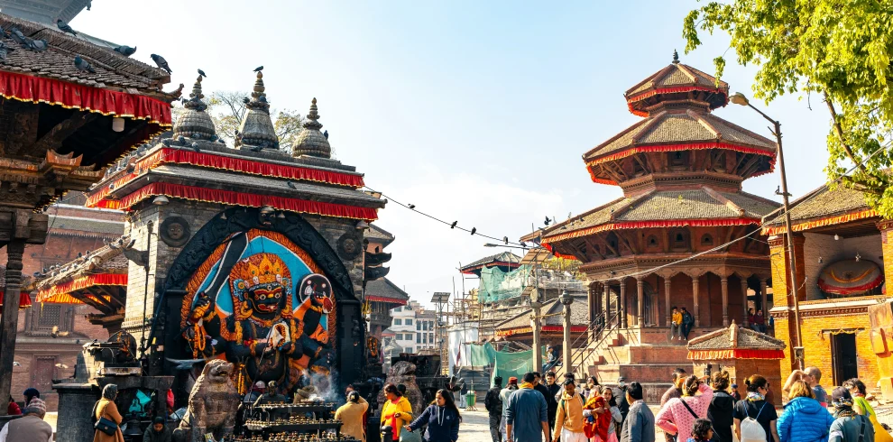
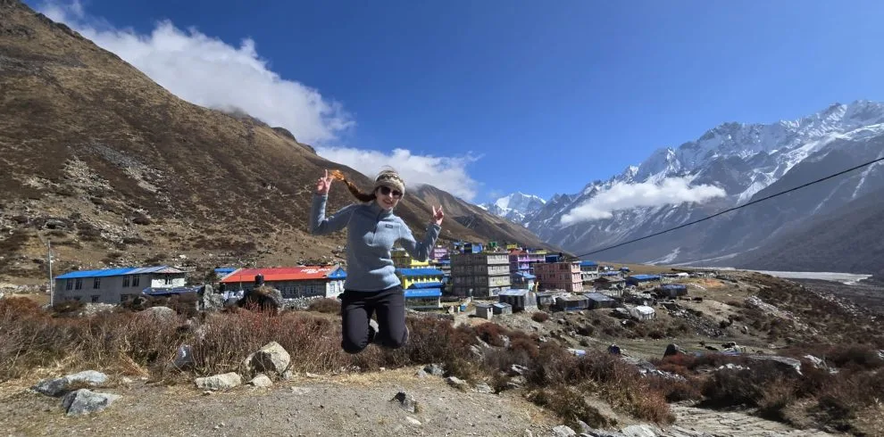
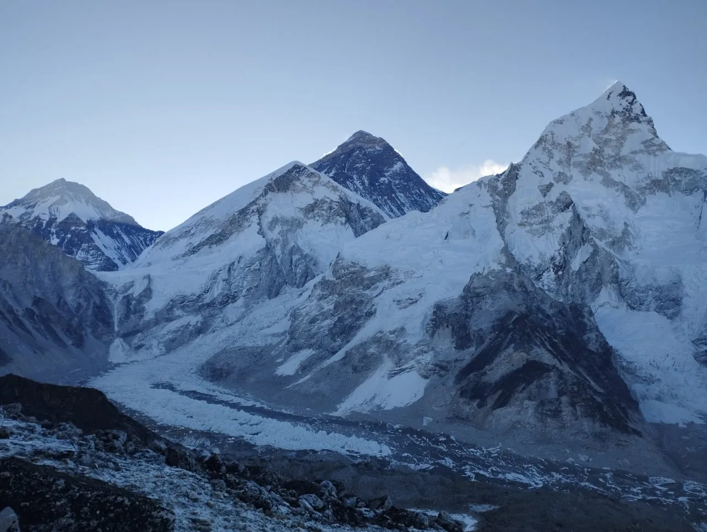
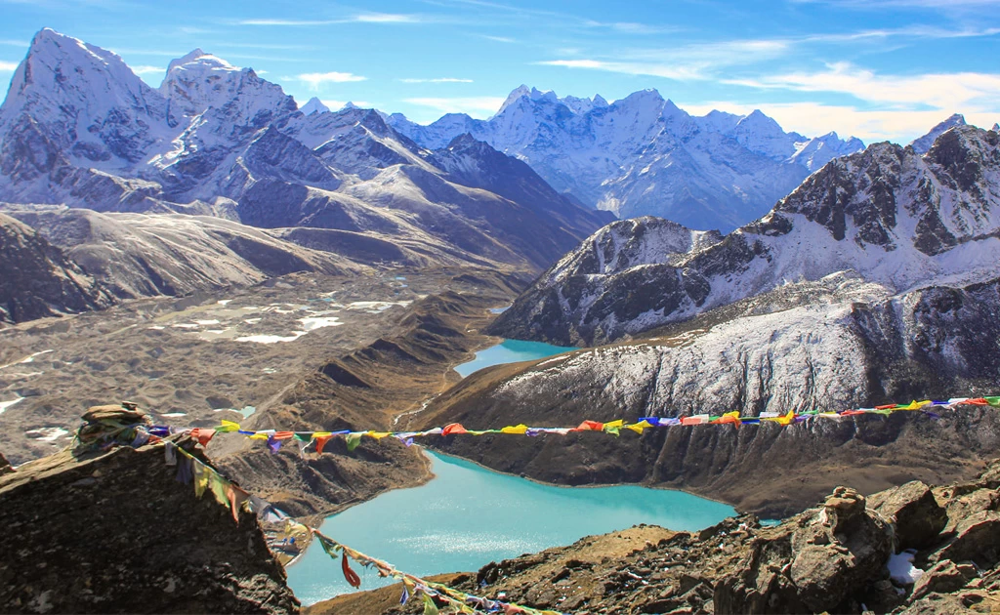
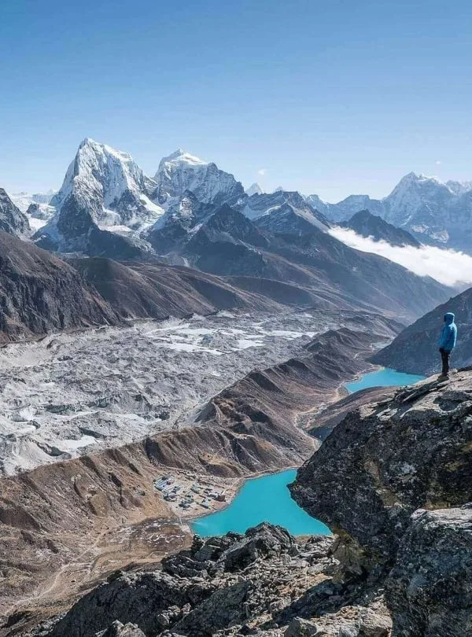
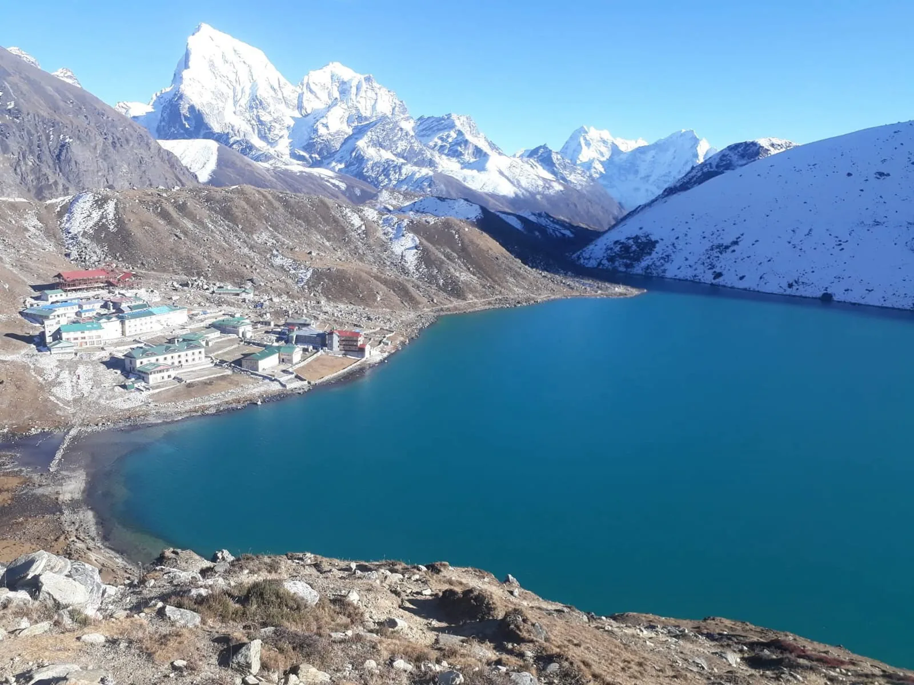
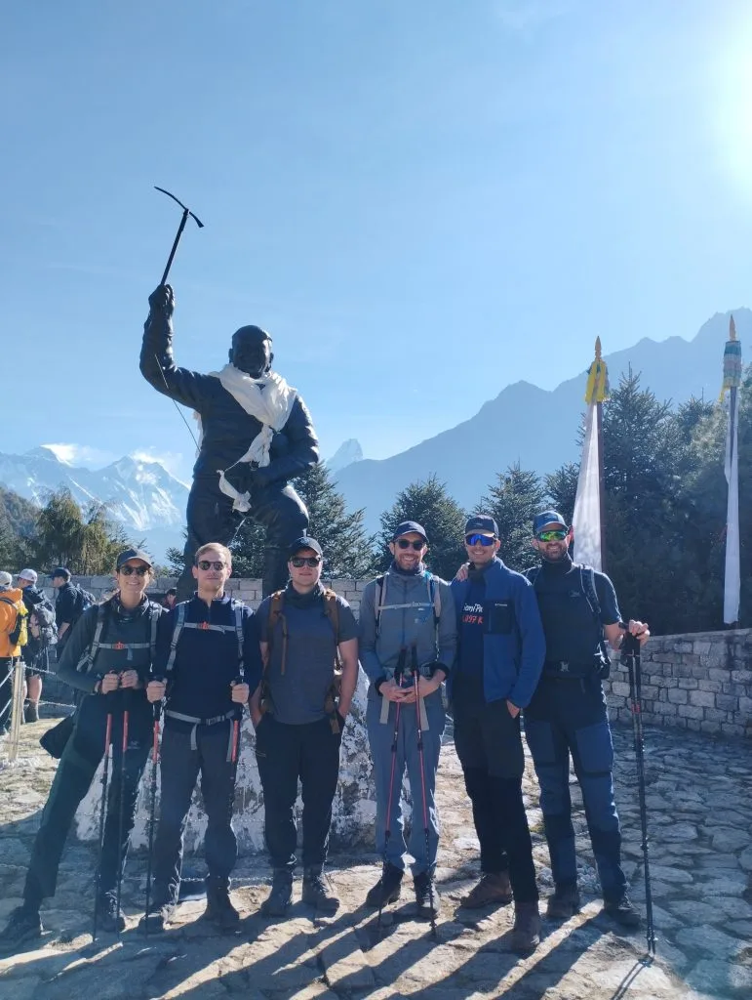

Our Everest Base Camp Trek (14 Days) with Igloo Himalaya Treks went beyond every expectation we had. What first pulled us towards them was their strict safety protocol and personal care. From the landing at Lukla to reaching Everest Base Camp (5,364m) and Kala Patthar, Sagar and the team made sure we were comfortable, safe, and hydrated every single day!
Everest Region • Dual High Pass Circuit
5.0
reviews on TripAdvisor
5.0
194 reviews on Google
Everest Cho La and Renjo La Pass Trek — 16 Days
Cross the two most dramatic high passes in the Himalayas without the grueling loose scree of Kongma La. Our 16-day Two Passes Circuit unites the majestic base camp of Mount Everest and the sunrise summit of Kala Patthar with the pristine glacial crossing of Cho La Pass (5,420 m) and the breathtaking panorama of Renjo La Pass (5,360 m).

Travelers' Choice
Best of the Best 2026




Key Trip Facts
Duration
16 days (inc. EBC, Cho La, Gokyo Ri & Renjo La)
Difficulty
Challenging (High Glacial Passes)
Maximum Altitude
5,545 m (Kala Patthar) / 5,420 m (Cho La)
Destination
Nepal
Activity
High-Pass Circuit & Glacial Trek
Accommodation
3-Star Kathmandu Hotel & Mountain Teahouses
Transport
Lukla Scenic Flights & Private Airport Transfers
Meals
Breakfast in KTM; Full Board (B, L, D) on Trek; Dinners
Recommended Season
Spring (Mar–May) & Autumn (Sep–Nov)
Trek Starts
Lukla (2,860 m)
Trek Ends
Lukla (2,860 m)
Trek Region
Everest / Khumbu & Gokyo Valley
Package Start Point
Kathmandu (TIA Airport)
Package End Point
Kathmandu (TIA Airport)
Everest Cho La and Renjo La Pass Trek Overview (16 Days)
The 16-Day Everest Cho La and Renjo La Pass Trek is widely acclaimed by seasoned Himalayan mountaineers as the finest high-pass adventure in Nepal. While the grueling Three Passes Trek includes the loose and unstable boulder scree of Kongma La, this thoughtfully curated Two Passes Circuit focuses purely on the two most magnificent, rewarding, and culturally rich crossings in the Everest region: the snow-covered glacial saddle of Cho La Pass (5,420 m) and the breathtaking panoramic ridge of Renjo La Pass (5,360 m).
Beginning with an exhilarating flight to Lukla, the trail ascends gradually through the pine-forested Dudh Koshi gorge to Namche Bazaar and the sacred monastery at Tengboche. Two structured acclimatization days in Namche Bazaar and Dingboche allow your body to build crucial red blood cells before tackling Everest Base Camp (5,364 m) and the sunrise summit of Kala Patthar (5,545 m). From the foot of Everest, the true wilderness adventure unfolds across Cho La Glacier to Gokyo Lakes and Renjo La, returning through the serene Bhote Koshi Valley.
Key Route Highlights & Destinations
Cho La Pass (5,420 m)
Renjo La Pass (5,360 m)
Everest Base Camp (5,364 m)
Kala Patthar Sunrise (5,545 m)
Gokyo Lakes & Gokyo Ri (5,357 m)
Ngozumpa Glacier (36 km)
Thame Monastery & Valley
Dual High Pass Circuit
Two Acclimatisation Days
Four 8,000 m Giants Panorama
Licensed High-Pass Sherpa Guides
Trek Highlights
Dual Iconic High Pass Crossings (5,420m & 5,360m)
Cross both Cho La Pass (5,420 m) with its glistening glacier traverse and Renjo La Pass (5,360 m) for the ultimate two-pass Khumbu circuit.
Everest Base Camp (5,364m) & Kala Patthar (5,545m)
Walk beside the iconic Khumbu Icefall at Everest Base Camp and summit Kala Patthar at sunrise for the world's premier close-up vista of Mt. Everest.
Sacred Turquoise Gokyo Lakes & Ngozumpa Glacier
Marvel at the six oligotrophic high-altitude glacial lakes of Gokyo and traverse Ngozumpa Glacier, the longest glacier in the Himalayas (36 km).
Panoramic Four 8,000m Giants from Gokyo Ri (5,357m)
Summit Gokyo Ri to behold Mount Everest (8,848.86m), Lhotse (8,516m), Makalu (8,485m), and Cho Oyu (8,188m) in a breathtaking single skyline.
Untouched Bhote Koshi Valley & Salt Route to Tibet
Descend from Renjo La into tranquil Lungden and follow the ancient Tibetan salt trade corridor away from crowded commercial trekking trails.
Historic Thame Village & Sacred 17th-Century Monastery
Explore Thame, ancestral homeland of Tenzing Norgay and Apa Sherpa, and tour the cliffside 17th-century Thame Dechen Chokhorling Gompa.
✓
Expert High-Pass Leadership
Our Sherpa guides have crossed Cho La and Renjo La dozens of times, ensuring safe glacier rope management and microspike support.
✓
Twice-Daily Health Screenings
Morning and evening digital pulse oximeter blood oxygen checks protect you from silent altitude sickness before tackling high passes.
✓
Loaned -20°C Down Gear
We loan you an expedition-rated down jacket and -20°C sleeping bag free of charge, keeping you warm at freezing high-altitude teahouses.
✓
Ethical 1:2 Porter Ratios
Strict adherence to International Porter Protection Group guidelines with 20–25 kg maximum limits, fair wages, and comprehensive mountain insurance.
Day 1: Fly from Kathmandu/Ramechhap to Lukla (2,840 m) & Trek to Phakding
Tribhuvan Int'l Airport / Tenzing-Hillary Airport to Phakding • 2,610 m / 8,563 ft (Lukla 2,840 m) • 35-min flight + 3–4 hrs trek
Approx. 35-min flight + 3–4 hrs trek
Distance: 8 km / 5.0 miles
Max Alt: 2,610 m / 8,563 ft (Lukla 2,840 m)
Stay: Teahouse Lodge, Phakding
Meals: Breakfast, Lunch, Dinner
Your Himalayan odyssey begins with an early morning scenic flight from Kathmandu (or Manthali/Ramechhap during peak diversion months) to Tenzing-Hillary Airport in Lukla. Soar over rolling green mid-hills and catch your first breathtaking views of the eastern snow-capped giants. In Lukla, you are greeted by your lead Sherpa guide and mountain porter team. After a short gear check and tea break, you lace up your boots and begin trekking downhill past chortens, carved Buddhist Mani stones, and prayer wheels through Chheplung and Thado Koshi. Follow the rushing milky-turquoise Dudh Koshi River through fragrant pine and rhododendron woods to the quiet riverside settlement of Phakding for your first night in the Khumbu.
Day 2: Trek from Phakding to Namche Bazaar (3,440 m) across Hillary Suspension Bridge
Phakding to Sagarmatha National Park & Namche Bazaar • 3,440 m / 11,286 ft • 5–6 hrs
Approx. 5–6 hrs
Distance: 11 km / 6.8 miles
Max Alt: 3,440 m / 11,286 ft
Stay: Mountain Lodge, Namche Bazaar (attached bath)
Meals: Breakfast, Lunch, Dinner
A classic mountain day featuring thrilling suspension bridges and your first glimpse of Mount Everest. Setting off from Phakding, the trail crisscrosses the surging Dudh Koshi over high cable bridges through Benkar, Chumoa, and Monjo. At Monjo, you officially enter Sagarmatha National Park, a UNESCO World Heritage site, where permits are verified. After descending to Jorsale for lunch, you follow the riverbank to the confluence of the Dudh Koshi and Bhote Koshi rivers. Here, you cross the soaring Hillary Suspension Bridge draped in hundreds of colorful Buddhist prayer flags. From the bridge, you begin the famous 600-meter zig-zagging climb through pine forests. Halfway up at the Everest Viewpoint, catch your first sight of Everest and Lhotse peeking over Nuptse ridge, before entering the vibrant crescent amphitheater of Namche Bazaar.
Day 3: Acclimatization Day: Hike to Hotel Everest View (3,880 m), Khumjung & Khunde
Namche Bazaar Acclimatization Circuit • 3,880 m / 12,729 ft (Sleep at 3,440 m) • 4–5 hrs
Approx. 4–5 hrs
Distance: 6 km / 3.7 miles
Max Alt: 3,880 m / 12,729 ft (Sleep at 3,440 m)
Stay: Mountain Lodge, Namche Bazaar
Meals: Breakfast, Lunch, Dinner
Scientific altitude acclimatization follows the golden rule: 'Climb high, sleep low.' After breakfast, you embark on an invigorating morning hike up the steep stone steps above Namche to the Syangboche airstrip. Continue ascending to the legendary Hotel Everest View (3,880 m), one of the highest luxury hotels in the world. Enjoy a cup of hot lemon ginger honey tea on the panoramic terrace gazing upon an awe-inspiring skyline: Mount Everest, Lhotse, Nuptse, Ama Dablam, Thamserku, and Kongde Ri. Afterwards, continue to the traditional Sherpa village of Khumjung to visit the ancient gompa housing a purported Yeti scalp and the Khumjung Hillary School founded by Sir Edmund Hillary in 1961. Return to Namche Bazaar for an afternoon exploring mountain bakeries, Sherpa cultural museums, and gear shops.
Day 4: Trek from Namche Bazaar to Tengboche (3,860 m) via Phunki Thenga
Namche Bazaar to Tengboche Monastery • 3,860 m / 12,664 ft • 5–6 hrs
Approx. 5–6 hrs
Distance: 9.5 km / 5.9 miles
Max Alt: 3,860 m / 12,664 ft
Stay: Teahouse Lodge, Tengboche
Meals: Breakfast, Lunch, Dinner
Today's trek is one of the most visually stunning days in the Himalayas. Leaving Namche, the trail traverses a wide balcony contouring high above the Imja Khola canyon, offering uninterrupted vistas of Everest, Nuptse, and the iconic pyramid of Ama Dablam soaring right before your eyes. Keep your eyes peeled for Himalayan tahr grazing on the steep cliffs and colorful Danphe (the national pheasant of Nepal). Descend steeply through birch and pine forests to the riverside outpost of Phunki Thenga for lunch beside water-driven prayer wheels. After crossing the river, tackle a steady 2-hour uphill push through scented rhododendron groves to the high forested ridge of Tengboche. Visit the world-famous Tengboche Monastery, the spiritual epicenter of the Khumbu, and witness the monks' afternoon chanting ceremony against the backdrop of Ama Dablam.
Day 5: Trek from Tengboche to Dingboche (4,410 m) through Pangboche & Imja Valley
Tengboche to Imja Valley & Dingboche • 4,410 m / 14,468 ft • 5–6 hrs
Approx. 5–6 hrs
Distance: 11 km / 6.8 miles
Max Alt: 4,410 m / 14,468 ft
Stay: Teahouse Lodge, Dingboche
Meals: Breakfast, Lunch, Dinner
Step out into crisp morning air to watch golden dawn light strike the summit of Mount Everest and Ama Dablam. Descend gently through the mossy forests of Deboche to cross the churning Imja Khola suspension bridge. The trail winds past intricately carved Mani walls to the historic village of Pangboche, home to the oldest monastery in the Everest region. As you ascend beyond Pangboche, the treeline vanishes and is replaced by sparse alpine scrub and dry mountain pastures. Cross the bridge at Somare and enter the expansive Imja Valley. The trail levels out as you hike alongside glacier-melt streams into Dingboche, a picturesque Sherpa settlement surrounded by intricate dry-stone walls designed to protect highland potato crops from cold mountain winds.
Day 6: Second Acclimatization Hike: Climb Nangkartshang Peak Ridge (5,083 m)
Dingboche Acclimatization Hike • 5,083 m / 16,676 ft (Sleep at 4,410 m) • 4–5 hrs
Approx. 4–5 hrs
Distance: 5.5 km / 3.4 miles
Max Alt: 5,083 m / 16,676 ft (Sleep at 4,410 m)
Stay: Teahouse Lodge, Dingboche
Meals: Breakfast, Lunch, Dinner
With high passes and Everest Base Camp looming ahead, today provides your vital second acclimatization day. You embark on a non-technical but demanding uphill climb directly behind Dingboche to the summit ridge of Nangkartshang Peak (5,083 m). As you gain elevation, the panorama becomes staggering: Makalu (8,485 m, 5th highest mountain on Earth) comes into view to the east, alongside Island Peak (Imja Tse), Cho Polu, Peak 38, Lhotse's gargantuan South Face, and the sheer north precipice of Ama Dablam rising vertically above the valley floor. Spend 30 to 45 minutes at the prayer-flag covered crest adjusting your lungs to the thin air before descending back to Dingboche for a warm lunch, hydration, and an afternoon of resting in the teahouse dining hall.
Day 7: Trek from Dingboche to Lobuche (4,910 m) via Thokla Pass Memorial Ridge
Dingboche to Thokla Memorials & Lobuche • 4,910 m / 16,108 ft • 5–6 hrs
Approx. 5–6 hrs
Distance: 8 km / 5.0 miles
Max Alt: 4,910 m / 16,108 ft
Stay: Teahouse Lodge, Lobuche
Meals: Breakfast, Lunch, Dinner
Ascend past the Pheriche valley junction onto the broad glacial plain of Dughla (4,620 m) at the snout of the massive Khumbu Glacier. Stop for a hot drink before tackling the steepest ascent of the day: the steep, boulder-strewn zig-zags of Thokla Pass (4,830 m). At the crest of the pass sits the deeply poignant Everest Climbers' Memorial. Dozens of stone chortens and prayer flags honor mountaineers and Sherpas who lost their lives on Mount Everest, including Babu Chiri Sherpa, Scott Fischer, and Rob Hall. After taking a quiet moment of reflection, the trail levels out along the lateral moraine of the Khumbu Glacier, following the gravelly wash beneath Nuptse and Pumori to the high windswept settlement of Lobuche.
Day 8: Trek Lobuche to Gorak Shep (5,164 m) & Hike to Everest Base Camp (5,364 m)
Lobuche to Gorak Shep & Everest Base Camp • 5,364 m / 17,598 ft (Sleep at 5,164 m) • 7–8 hrs
Approx. 7–8 hrs
Distance: 13 km / 8.1 miles
Max Alt: 5,364 m / 17,598 ft (Sleep at 5,164 m)
Stay: Teahouse Lodge, Gorak Shep
Meals: Breakfast, Lunch, Dinner
A monumental milestone day! You set off early from Lobuche, traversing loose glacial moraines, jagged ice seracs, and frozen mounds beside the Khumbu Glacier. Arrive at Gorak Shep (5,164 m), the highest permanent teahouse outpost on the route. Check into your room, drop heavy daypacks, fuel up on garlic soup and hot tea, and push onwards to Everest Base Camp. The trail weaves across shifting lateral moraine and the edge of the living Khumbu Glacier. After 3 hours of focused trekking, you arrive at Everest Base Camp (5,364 m)! Stand beneath fluttering prayer flags at the iconic graffiti rock, surrounded by the towering blue ice pinnacles of the Khumbu Icefall and sheer walls of Nuptse and Pumori. After celebrating, taking photos, and absorbing the atmosphere, trek back to Gorak Shep for dinner and an early night.
Day 9: Sunrise Summit of Kala Patthar (5,545 m) & Trek to Dzongla (4,830 m)
Gorak Shep, Kala Patthar & Dzongla • 5,545 m / 18,192 ft (Sleep at 4,830 m) • 6–7 hrs
Approx. 6–7 hrs
Distance: 12 km / 7.5 miles
Max Alt: 5,545 m / 18,192 ft (Sleep at 4,830 m)
Stay: Teahouse Lodge, Dzongla
Meals: Breakfast, Lunch, Dinner
Begin walking at 4:30 AM under a brilliant canopy of Himalayan stars for the steep push up Kala Patthar (5,545 m), the highest elevation point of the entire trek. Bundled in your down jacket, step methodically up the rocky switchbacks as the first dawn light turns the summit of Mount Everest glowing pink and fiery gold. Standing beside the prayer-flag crest, enjoy the single most famous 360-degree close-up view of Everest's pyramid, the South Col, Nuptse, Changtse, and Pumori. Descend to Gorak Shep for breakfast, pack your gear, and retrace your steps past Lobuche to the junction at Dughla. Here, you branch west off the standard EBC highway toward Dzongla (4,830 m), an isolated hamlet situated directly beneath the sheer 2,000-meter north face of Cholatse Peak—the strategic launchpad for crossing Cho La Pass.
Day 10: PASS 1: Cross Cho La Pass (5,420 m) Glacier & Descend to Thangnak (4,700 m)
Dzongla across Cho La Pass to Thangnak • 5,420 m / 17,782 ft (Sleep at 4,700 m) • 7–8 hrs
Approx. 7–8 hrs
Distance: 8.5 km / 5.3 miles
Max Alt: 5,420 m / 17,782 ft (Sleep at 4,700 m)
Stay: Teahouse Lodge, Thangnak
Meals: Breakfast, Lunch, Dinner
Your first formidable high-pass test! Leaving Dzongla at dawn, you hike across a high grassy basin before scrambling up steep, loose talus boulders to the lower saddle of Cho La. Here, the real adventure begins: strap on your microspikes or crampons to traverse the permanently frozen Cho La Glacier. Walking across pristine blue ice and snow-crusted slopes beneath the towering cliffs of Cholatse is an unforgettable mountaineering experience. Reach the prayer flags marking the crest of Cho La Pass (5,420 m) to celebrate with your team. To the east, look back at Ama Dablam and Cholatse; to the west, gaze towards the Gokyo amphitheater. The descent requires care: carefully navigate down steep scree switchbacks and frozen rock shelves into the peaceful valley of Thangnak (4,700 m) for a well-earned feast and rest.
Day 11: Trek from Thangnak across Ngozumpa Glacier to Gokyo Lakes (4,790 m)
Thangnak across Ngozumpa Glacier to Gokyo Village • 4,790 m / 15,715 ft • 4–5 hrs
Approx. 4–5 hrs
Distance: 5 km / 3.1 miles
Max Alt: 4,790 m / 15,715 ft
Stay: Teahouse Lodge, Gokyo
Meals: Breakfast, Lunch, Dinner
A shorter walking day with profound geological drama. Leaving Thangnak, you climb onto the lateral moraine of the Ngozumpa Glacier—the longest glacier in the entire Himalayan range (36 km). The trail weaves through a labyrinth of shifting rocks, sandy mounds, glacial meltwater tarns, and creaking ice ridges. Your guide expertly navigates the dynamic moraine trail. Upon climbing over the western moraine wall, you are greeted by one of the most breathtaking sights in the world: the mirror-like turquoise waters of Dudh Pokhari (the Third Gokyo Lake). Nestled along its eastern shore sits the charming stone village of Gokyo (4,790 m). Settle into your lodge, enjoy lunch overlooking the crystal-clear glacial waters, and spend the afternoon relaxing beside the lake.
Day 12: Sunrise Summit of Gokyo Ri (5,357 m) & Exploration of Gokyo 4th & 5th Lakes
Gokyo Ri & Upper Gokyo Lakes Basin • 5,357 m / 17,575 ft (Sleep at 4,790 m) • 5–6 hrs
Approx. 5–6 hrs
Distance: 8 km / 5.0 miles
Max Alt: 5,357 m / 17,575 ft (Sleep at 4,790 m)
Stay: Teahouse Lodge, Gokyo
Meals: Breakfast, Lunch, Dinner
Rise before dawn for the climb up Gokyo Ri (5,357 m), widely regarded by mountaineers as offering an even grander panoramic view than Kala Patthar. From the wind-whipped summit cairn, behold four of the world's fourteen 8,000-meter giants in a single frame: Cho Oyu (8,188 m), Mount Everest (8,848.86 m), Lhotse (8,516 m), and Makalu (8,485 m). Below lies the immense gray serpent of Ngozumpa Glacier and the string of vibrant sapphire lakes. Descend to the village for breakfast. In the afternoon, you can embark on a hike further north along the moraine to the 4th Lake (Thonak Tsho) and 5th Lake (Ngozumpa Tsho), where the gargantuan South Face of Cho Oyu towers directly above the glacial basin, before returning to Gokyo to prepare for Renjo La.
Day 13: PASS 2: Cross Renjo La Pass (5,360 m) & Descend into Remote Lungden (4,380 m)
Gokyo across Renjo La Pass to Lungden • 5,360 m / 17,585 ft (Sleep at 4,380 m) • 7–8 hrs
Approx. 7–8 hrs
Distance: 11 km / 6.8 miles
Max Alt: 5,360 m / 17,585 ft (Sleep at 4,380 m)
Stay: Teahouse Lodge, Lungden
Meals: Breakfast, Lunch, Dinner
The second great high pass of the journey! Departing Gokyo at first light, you skirt the northern shore of Dudh Pokhari and begin a steady, well-graded ascent up the western ridge. The trail features remarkable stone switchbacks engineered into the rocky flank. As you approach the top, take a moment to look back over your shoulder: the view of Mount Everest rising directly above the turquoise Gokyo Lake is what National Geographic dubbed one of the finest mountain vistas on Earth. Reach Renjo La Pass (5,360 m), adorned with Buddhist prayer flags. Soak in the jaw-dropping vista spanning Everest, Lhotse, Makalu, and Taboche before descending westward. The trail drops down gentle stone staircases past frozen alpine tarns and high yak pastures into the pristine, untamed valley of Lungden (4,380 m).
Day 14: Trek from Lungden to Historic Thame (3,820 m) along Ancient Salt Trade Route
Lungden through Marlung to Thame • 3,820 m / 12,532 ft • 4–5 hrs
Approx. 4–5 hrs
Distance: 10 km / 6.2 miles
Max Alt: 3,820 m / 12,532 ft
Stay: Teahouse Lodge, Thame
Meals: Breakfast, Lunch, Dinner
Today you leave behind the high passes and descend into the historic Bhote Koshi Valley. For centuries, this corridor served as the primary trans-Himalayan trade highway connecting Nepal with Tibet via the 5,716-meter Nangpa La pass. Walk down through traditional yak-herding hamlets in Marlung and Tarnga where life remains rooted in ancient Sherpa culture. Continue descending alongside the tumbling Bhote Koshi River to Thame (3,820 m), the historic mountaineering cradle of the Khumbu. Thame is the ancestral home of Tenzing Norgay Sherpa and legendary Everest record-holder Apa Sherpa. In the afternoon, visit the dramatic 17th-century Thame Dechen Chokhorling Gompa, perched high on a cliffside above the village, where you can explore ancient murals and spin giant prayer wheels.
Day 15: Trek from Thame to Namche Bazaar & Complete Descent to Lukla (2,840 m)
Thame through Namche Bazaar & Monjo to Lukla • 2,840 m / 9,317 ft • 6–7 hrs
Approx. 6–7 hrs
Distance: 18 km / 11.2 miles
Max Alt: 2,840 m / 9,317 ft
Stay: Teahouse Lodge, Lukla
Meals: Breakfast, Lunch, Dinner
A deeply satisfying final trekking day. Follow the scenic hillside trail eastward from Thame through Mende and the hydro-power village of Thamo back to the amphitheater of Namche Bazaar for a celebratory espresso and bakery treat. From Namche, retrace the pine-forested switchbacks down to the Hillary Bridge, cross the Dudh Koshi, and check out at the Sagarmatha National Park gate in Monjo. Continue trekking through the river valley past Phakding, crossing familiar suspension bridges in reverse. A final gentle uphill climb brings you back into the lively mountain hub of Lukla. In the evening, gather with your lead guide, assistant guides, and porters for a celebratory farewell banquet, sharing stories of Cho La, Renjo La, and Everest Base Camp, and distributing well-earned tips to your dedicated Sherpa team.
Day 16: Scenic Morning Flight from Lukla to Kathmandu / Ramechhap & Transfer
Lukla Airport to Kathmandu (Thamel) • 1,400 m / 4,593 ft • 35-min flight + private transfer
Approx. 35-min flight + private transfer
Distance: 135 km flight
Max Alt: 1,400 m / 4,593 ft
Stay: Hotel in Kathmandu (Thamel)
Meals: Breakfast
Board an early morning flight from Tenzing-Hillary Airport in Lukla. Enjoy one final magnificent aerial glimpse of the snow-crowned Himalayan crest as your twin-otter aircraft glides down into Kathmandu (or Manthali/Ramechhap with private vehicle transfer back to the capital). Our representative meets you at the airport and transfers you to your hotel in Thamel. Relax in comfort, enjoy a long hot shower, indulge in a restorative massage, and spend your afternoon shopping for souvenirs, singing bowls, and pashminas in the lively bazaar. In the evening, join the Igloo Himalaya Treks team for a celebratory farewell dinner, commemorating your heroic completion of the Everest Cho La and Renjo La Pass Trek!
What's Included & What's Excluded
Transparency is paramount to our philosophy. Here is the comprehensive breakdown of everything covered and excluded in your 16-Day Everest Two Passes journey.
✓
What's Included
- ✔ Round-trip domestic flights (Kathmandu/Ramechhap to Lukla to Kathmandu/Ramechhap) including all airport departure taxes.
- ✔ Private ground transfers between Kathmandu hotel and domestic airport (including Ramechhap transfers during CAAN seasonal diversion).
- ✔ 15 nights accommodation (15 nights authentic mountain teahouses along the trek, with attached bathrooms in Namche and Phakding).
- ✔ All 3 daily meals during the trek (hearty breakfast, lunch, and dinner) with hot tea or coffee with every meal.
- ✔ Government-licensed, wilderness first-aid certified Sherpa Trek Leader with extensive high-pass and high-altitude experience.
- ✔ Dedicated local mountain porters (1 porter per 2 trekkers, strictly following 20–25 kg IPPG humane weight limits).
- ✔ Sagarmatha National Park Entry Permit and Khumbu Pasang Lhamu Rural Municipality Local Entry Permit.
- ✔ Expedition-grade -20°C down sleeping bag and 800-fill down jacket loaned free of charge for the trek.
- ✔ Igloo Himalaya Treks heavy-duty 80L waterproof duffel bag, souvenir trek map, and commemorative completion certificate.
- ✔ Comprehensive wilderness medical kit, emergency bottled oxygen, and twice-daily digital pulse oximeter blood oxygen screenings.
- ✔ All staff salaries, high-altitude gear, mountain insurance, food, and accommodation for guide and porter team.
- ✔ Farewell dinner at an authentic Nepali cultural restaurant in Kathmandu with our executive team.
✕
What's Excluded
- ✖ International airfare to/from Tribhuvan International Airport (Kathmandu) and Nepal entry visa fees ($30 for 15 days, $50 for 30 days).
- ✖ Mandatory travel and medical insurance explicitly covering emergency helicopter evacuation and trekking up to 6,000 meters.
- ✖ Hotel accommodation and meals in Kathmandu before Day 1 and after Day 16 (can be arranged on request).
- ✖ Personal gear (microspikes, hiking boots, trekking poles, thermal base layers, personal hygiene items).
- ✖ Hot showers (approx. $3 to $5) and electronic device charging fees (approx. $2 to $5) at mountain teahouses.
- ✖ Wi-Fi connectivity cards (Everest Link cards) and mobile SIM card data packages.
- ✖ Cold drinks, alcoholic beverages, bottled mineral water, specialty espresso coffees, and snacks.
- ✖ Tips and gratuities for your Sherpa guide, assistant guides, and porters (recommended $10–$15/day pooled across group).
★
Zero Hidden Costs Guarantee
Unlike other operators who tack on flight surcharges, luggage fees, or loan deposit rentals, our quoted price is 100% all-inclusive. You will never encounter surprise add-ons once on the trail.
2026 & 2027 Guaranteed Departure Dates
Small group departures (max 10 trekkers) with 100% guaranteed flight seats & native guides.
Do your dates not align with our schedule?
We organize private bespoke departures on any day of the year at no additional cost.
Interactive High-Pass Packing Checklist
35 Essential Items for Cho La Glacier & Renjo La Crossings
0 / 35 Items Packed
Clothing Layers 10 items
Footwear & Traction 7 items
Technical Gear & Hardware 9 items
Health, Toiletries & Electronics 9 items
Read Before You Book: Essential High-Pass Guide
10 Critical Briefings for Cho La and Renjo La Pass Expeditions
0% Reviewed
Topographic Elevation Profile (Cho La & Renjo La)
Visual representation of daily altitude gain and descent across 16 days. Notice our gradual acclimatization profile with dual rest days in Namche Bazaar (3,440 m) and Dingboche (4,410 m) prior to tackling the two 5,300m+ passes.
Weather & Best Seasons for Two Passes
Because crossing Cho La and Renjo La involves traversing glacial snowfields and rocky alpine saddles, selecting prime trekking windows is crucial for clear panoramas and safe trail traction.
🌸 Spring (March to May)
PEAK SEASON
Warm daytime sunshine, blooming rhododendron forests below Tengboche, and moderate pass temperatures. Gokyo Lakes thaw into dazzling turquoise gems.
Day Temp: 10°C to 18°C
Night Temp: -5°C to -12°C
🍁 Autumn (September to November)
BEST VISIBILITY
Crystal-clear post-monsoon blue skies offering the sharpest Himalayan visibility of the entire year. Passes are dry, stable, and crisp with negligible precipitation.
Day Temp: 8°C to 15°C
Night Temp: -8°C to -15°C
❄️ Winter (December to February)
QUIET / COLD
Empty trails and stunning skies, but extreme cold below -20°C at night. Cho La Pass may require crampons and ropes if heavy winter snow accumulates.
Day Temp: 2°C to 8°C
Night Temp: -15°C to -25°C
🌧️ Summer / Monsoon (June to August)
NOT RECOMMENDED
Heavy rains, cloudy peaks, leeches at lower elevations, and frequent flight cancellations into Lukla. High passes become slippery and avalanche-prone.
Day Temp: 14°C to 22°C
Night Temp: 2°C to 6°C
Everest Cho La and Renjo La Trek Route Map
Book the Everest Cho La and Renjo La Pass Trek
Ready to cross two of the greatest high passes in the Himalayas? Send us your preferred dates and group size. We will confirm availability, lock in your domestic Lukla flights, and assign an experienced high-pass Sherpa guide.
Best Himalayan Trekking Reviews
Over 15,000 adventure seekers have explored Everest, Annapurna, and Manaslu with Igloo Himalaya Treks.

9 May

28 February

11 January

14 March


Everest Cho La & Renjo La Pass FAQs
General & Route
Why choose the Cho La and Renjo La Pass Trek over the Everest Three Passes Trek?
∨
The Cho La and Renjo La Pass Trek is the ideal choice for trekkers who want the thrilling adventure of crossing two world-class high passes while bypassing the loose, unstable boulder moraine of Kongma La (5,535 m). You still reach Everest Base Camp, Kala Patthar, Gokyo Lakes, and Gokyo Ri, but with less objective rockfall hazard and fewer consecutive punishing pass days.
What is the highest altitude reached on this 16-day trek?
∨
The highest elevation point is Kala Patthar summit at 5,545 meters (18,192 ft), climbed on Day 9 for the world-famous sunrise panorama of Mt. Everest. The highest pass is Cho La Pass at 5,420 meters (17,782 ft) on Day 10, followed by Renjo La Pass at 5,360 meters (17,585 ft) on Day 13.
How does the route connect from Everest Base Camp to Gokyo Lakes?
∨
After visiting Everest Base Camp and Kala Patthar, you trek to the high staging hamlet of Dzongla. From Dzongla, you cross Cho La Pass (5,420 m) across its frozen glacier and descend to Thangnak. From Thangnak, you cross the immense Ngozumpa Glacier directly into Gokyo village on the shores of Dudh Pokhari Lake.
What direction does the circuit follow?
∨
Our standard 16-day itinerary runs anti-clockwise: first ascending the classic Everest Base Camp valley to Kala Patthar and EBC, which gives you 9 solid days of gradual acclimatization before crossing your first pass (Cho La). You then visit Gokyo, cross Renjo La, and descend the quiet Bhote Koshi valley through Thame.
How difficult is the Everest Cho La and Renjo La Pass Trek?
∨
The trek is graded Challenging to Strenuous. While it requires no technical climbing ropes or ice axe skills, you will walk 5 to 8 hours daily over rugged moraine, loose scree, and icy glacier terrain at altitudes where oxygen levels drop to roughly 50% of sea level. Good cardiovascular fitness and leg stamina are essential.
Are microspikes or crampons required for Cho La and Renjo La?
∨
Yes. Microspikes (trail crampons) are mandatory for Cho La Pass, where you traverse a permanently frozen, blue-ice glacier slope. Microspikes can easily be slipped over regular trekking boots and provide vital traction. Heavy mountaineering crampons and plastic double boots are not necessary.
What trekking equipment is provided by Igloo Himalaya Treks?
∨
We provide you with a high-quality four-season down sleeping bag (-20°C rated), an expedition-grade down jacket, and a durable 80L water-resistant trekking duffel bag. The sleeping bag and down jacket are loaned for the trip, while the duffel bag is yours to keep.
What is the luggage weight limit on domestic Lukla flights?
∨
Domestic airlines strictly enforce a 15 kg (33 lbs) weight limit per passenger, consisting of 10 kg for your main duffel bag (carried by your porter) and 5 kg for your daypack. Any non-trekking city clothes and luggage can be safely stored free of charge at our hotel in Kathmandu.
What kind of footwear is recommended?
∨
Sturdy, waterproof, high-ankle trekking boots with stiff Vibram-style soles and Gore-Tex lining are strongly recommended. Make sure your boots are thoroughly broken in before arriving in Nepal to avoid painful blisters on long pass days.
What happens if severe weather closes Cho La Pass?
∨
If heavy snow or sudden blizzard conditions make crossing Cho La Pass unsafe, your experienced Sherpa guide will evaluate the conditions. If the pass is blocked, the alternate route is to descend via Pheriche and Phortse to loop safely into the Gokyo Valley, ensuring you still experience the Gokyo Lakes without taking unnecessary mountain risks.
How do guides monitor altitude adaptation?
∨
Your Sherpa guide carries digital pulse oximeters and conducts medical screenings every morning before breakfast and every evening after dinner. Your blood oxygen saturation (SpO2) and heart rate are recorded on a trek chart, allowing early detection of altitude illness before severe symptoms arise.
What emergency protocols exist for high-altitude evacuation?
∨
In the event of acute mountain sickness (HAPE or HACE) or serious injury, immediate descent to lower altitude is initiated. Our Kathmandu operations headquarters coordinates 24/7 with helicopter rescue operators to dispatch an emergency airlift to Kathmandu, provided you hold valid high-altitude travel insurance.
Where do Lukla flights depart from during peak season?
∨
During peak trekking months (Spring: March–May; Autumn: September–November), the Civil Aviation Authority of Nepal routes Lukla flights through Manthali Airport in Ramechhap to avoid air traffic congestion in Kathmandu. We provide shared or private road transfers from Kathmandu to Ramechhap (approx. 4 hours) included in your package.
Can solo travelers join this 16-day trek?
∨
Yes! Solo travelers are warmly welcomed to join any of our guaranteed fixed departure groups at our group price ($1,390 to $1,490), or book as a private solo expedition ($1,650) with their own dedicated licensed Sherpa guide and porter.
How much deposit is required to secure a booking?
∨
We require a modest 15% deposit to confirm your trek dates, issue your non-refundable domestic Lukla flight tickets, and secure your teahouse rooms. The remaining 85% balance can be settled upon arrival in Kathmandu via credit card or cash before the trek departs.
MORE ADVENTURES
You Might Also Like
If you would prefer alternative itineraries through the Everest region and beyond, consider these packages.

21 DaysEverest Three High Passes Trek
Cross Kongma La, Cho La, and Renjo La for the ultimate 3-week comprehensive Khumbu circuit.

16 DaysEBC Chola Pass Gokyo Trek
Cross Cho La Pass between Everest Base Camp and Gokyo Lakes, returning through Dole and Namche.

12 DaysGokyo Lakes Trek — 12 Days
Ascend the sacred Gokyo Valley to turquoise glacial lakes and summit Gokyo Ri (5,357 m).
20 Days
Three Passes & Island Peak Climb
Combine Kongma La, Cho La, and Renjo La with an ascent of Island Peak 6,189 m.